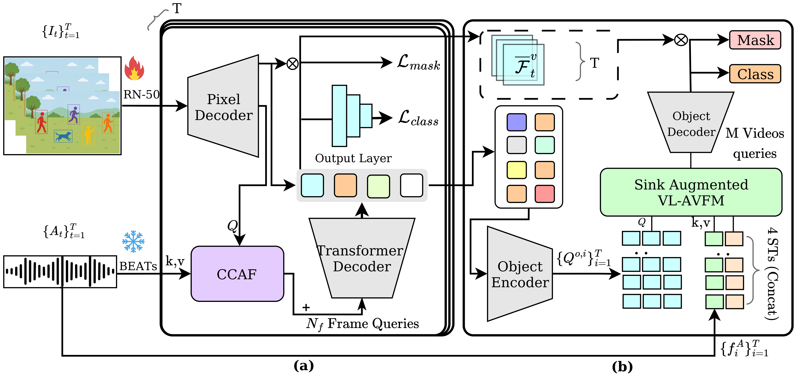

A deep learning framework for segmenting and tracking sounding objects in video sequences.
Audio-Visual Instance Segmentation (AVIS) requires a deep learning model to find, segment, and track every object instance that is actively emitting sound throughout an untrimmed video sequence. On the standard AVISeg benchmark, the silent-frame sub-metric FSLAn—the fraction of genuinely silent frames a model leaves correctly unmasked—remains the weakest score across all published methods, with recent extensions trading it away in exchange for raw detection metrics.
We first measure four foundational properties of AVISeg and of a trained baseline's internals: establishing that residual audio does not linger across sound-to-silence boundaries, that same-category confusion is predominantly a multi-speaker rather than an instrument-ensemble phenomenon, and that sounding versus silent signals are separable at the model's downstream classification embeddings (Cohen's \(d = 0.555\)) rather than within raw attention weights.
Guided by these empirical measurements, we introduce SAVIS (Sink-Augmented Audio-Visual Instance Segmentation). SAVIS augments the windowed Video-Level Audio-Visual Fusion Module (VL-AVFM) with attention-sink registry tokens—realizing a promising open direction named in the literature—alongside channel-spatial attention on multi-scale visual features, causal cross-attention fusion (CCAF), and audio-guided contrastive learning (AGCL). Trained on a single consumer GPU under the ImageNet-only protocol, SAVIS with BEATs improves six of eight benchmark metrics over the CVPR'25 baseline, while our VGGish configuration lifts silent-frame accuracy by 8 points (to 40.28) and achieves the highest overall mAP (41.80).
Pre-registered probes quantify scale disparity, sub-frame acoustic decay, multi-speaker dynamics, and embedding separability.
Learnable registry tokens appended to temporal windows prevent spurious feature hijacking during silent intervals.
Zero-initialized residual gating on Strides 8, 16, and 32 feature pyramids resolves extreme 2-order-of-magnitude scale variations.
Causal audio history cross-attention paired with instance-level InfoNCE audio contrastive objectives pulls sounding instances to audio anchors.
A two-stage set-prediction framework augmented with multi-scale visual refinement, causal cross-attention, and sink-augmented video fusion.

To address the dramatic instance area variance (spanning 4.6k px for flutes up to >110k px for humans), we refine pixel decoder multi-scale features with channel and spatial attention under a zero-initialized residual gate:
This allows visual features to adaptively emphasize sounding spatial regions without destabilizing pretrained initializations.
Rather than isolated single-frame fusion, visual features at time \(t\) cross-attend over the causal audio history up to frame \(t\) under a strict temporal mask \(M\):
This conditions query representations on acoustic context and onset dynamics across video timelines.
AVISM partitions temporal self-attention into fixed and shifted windows. We append \(R = 4\) learnable registry tokens to the key/value inputs of both passes:
These provide permanent global anchors across shifted partitions and absorb surplus attention mass during silent frames.
Rigorous evaluation on the AVISeg test benchmark under the standardized ResNet-50 ImageNet-only training protocol.
| Task | Method | Audio | FSLA ↑ | HOTA ↑ | mAP ↑ | FSLAn ↑ | FSLAs ↑ | FSLAm ↑ | AssA ↑ | DetA ↑ |
|---|---|---|---|---|---|---|---|---|---|---|
| VIS | Mask2Former-VIS (CVPR'22) | ✗ | 29.75 | 52.03 | 28.66 | 0.00 | 25.47 | 36.37 | 64.49 | 43.33 |
| VITA (NeurIPS'22) | ✗ | 38.04 | 57.48 | 36.25 | 15.04 | 27.98 | 47.45 | 69.86 | 48.96 | |
| AVSS | AVSegFormer (AAAI'24) | ✓ | 35.66 | 55.74 | 35.72 | 18.58 | 27.51 | 43.08 | 67.13 | 48.51 |
| COMBO (CVPR'24) | ✓ | 39.49 | 57.39 | 37.84 | 21.91 | 27.18 | 49.63 | 68.87 | 50.12 | |
| AVIS | AVISM Baseline (CVPR'25) | ✓ | 42.78 | 61.73 | 40.57 | 32.22 | 29.83 | 52.40 | 71.15 | 54.97 |
| SAVIS (VGGish, Ours) | ✓ | 41.78 | 61.92 | 41.80 | 40.28 | 29.63 | 49.70 | 70.89 | 55.28 | |
| SAVIS (BEATs, Ours) | ✓ | 43.49 | 62.38 | 40.73 | 18.90 | 34.72 | 52.29 | 71.41 | 55.86 |
| Block | mAP ↑ | FSLA ↑ | FSLAm ↑ | HOTA ↑ | AssA ↑ | DetA ↑ |
|---|---|---|---|---|---|---|
| Spatial Gated (SGF) | 38.50 | 38.10 | 46.62 | 60.59 | 71.15 | 52.74 |
| CBAM (Ours) | 38.60 | 42.13 | 49.79 | 61.12 | 71.19 | 54.10 |
| Fusion | AGCL | mAP ↑ | FSLA ↑ | FSLAn ↑ | HOTA ↑ |
|---|---|---|---|---|---|
| SGF | ✗ | 39.54 | 41.33 | 28.57 | 60.10 |
| CCAF (Ours) | ✓ | 41.80 | 41.78 | 40.28 | 61.92 |
Evaluating temporal tracking, mask fidelity, and sound-source discrimination across major sound families.


Real-time video instance segmentation and tracking of sounding sources across continuous timelines.
Demonstrating precise instance mask activation synchronized to voice activity, leaving silent interlocutors unmasked.
Tracking articulated instruments under simultaneous playback with persistent instance identities across sequence duration.
Evaluating rapid transitions from silence to sound, demonstrating sub-frame response to acoustic onsets.
Pre-registered diagnostic probes on AVISeg benchmark structure and internal model representations.
We measured per-instance pixel area across all 26 AVISeg categories: small wind instruments (flute, trumpet, clarinet) exhibit median areas of 4.6k–9.2k px, mid-sized instruments (violin, guitar) 19k–32k px, while non-instrument classes (person, dog, cat) exceed 110k px—a span of nearly two orders of magnitude.
We measured the \(L_2\) norm of audio embeddings over a 6-frame window across 373 sounding-to-silent transitions. The norm drops from 3.6747 to 3.5727 within a single frame—completing 61.2% of the total decay to steady-state silence in under 1 second.
We measured how often multiple same-category instances appear together and desynchronize. Musical instruments almost never desynchronize (0.6%–3.1% for violin, guitar, pipa), while the primary source of co-sounding confusion is conversational humans (45.9%), cats (27.7%), and dogs (15.7%).
Using a pre-registered effect-size threshold (Cohen's \(d \ge 0.5\)), raw attention weights fail to separate sounding from silent instances (\(d = -0.27\) and \(d = 0.005\)). In contrast, the margin at the final classification layer downstream of attention strongly separates sounding vs silent instances (Cohen's \(d = 0.555, p < 10^{-60}\)).
Single consumer GPU execution environment (NVIDIA RTX 4080 / Ubuntu 24.04 / CUDA 12.1 / PyTorch 2.1.0).
# 1. Clone the repository
git clone https://github.com/Sayyam-Akram/savis.git
cd savis
# 2. Setup Conda environment
conda create --name savis python=3.8 -y
conda activate savis
# 3. Install PyTorch with CUDA 12.1 support
pip install torch==2.1.0 torchvision==0.16.0 --index-url https://download.pytorch.org/whl/cu121
# 4. Install dependencies & Detectron2
pip install -U opencv-python ninja
pip install -r requirements.txt
git clone https://github.com/facebookresearch/detectron2.git
cd detectron2 && pip install -e . && cd ..
# 5. Compile Deformable Attention CUDA Operators
cd mask2former/modeling/pixel_decoder/ops
sh make.sh
cd ../../../../# 1. Setup AVISeg Dataset directory
mkdir -p datasets
# Download and extract AVISeg.zip inside datasets/
# 2. Setup Pretrained Backbones and Weights
mkdir -p pre_models checkpoints
# Place BEATs checkpoint in root:
# -> BEATs_iter3_plus_AS2M.pt
# Place visual backbone in pre_models/
# Place trained checkpoint in checkpoints/:
# -> checkpoints/AVISM_R50_IN.pth# Train SAVIS on a single GPU (RTX 4080 16GB, effective batch size 2 via grad accum)
python train_net.py \
--config-file configs/avism/R50/avism_R50_IN.yaml \
--num-gpus 1# Evaluate SAVIS checkpoint on AVISeg Test Set
python train_net.py \
--config-file configs/avism/R50/avism_R50_IN.yaml \
--eval-only \
MODEL.WEIGHTS checkpoints/AVISM_R50_IN.pth# Run visualization demo on input video sequences
python demo_video/demo.py \
--config-file configs/avism/R50/avism_R50_IN.yaml \
--opts MODEL.WEIGHTS checkpoints/AVISM_R50_IN.pth \
--output-dir demo_output/Preprint detailing measurements, sink-augmented architecture, and ablations.
Official PyTorch implementation, configs, training scripts, and demo visualizer.
926 annotated video clips across 26 sound-emitting categories.
Trained SAVIS checkpoints and pretrained audio/visual backbones.
@article{akram2026savis,
title={SAVIS: A Sink-Augmented Baseline for Audio-Visual Instance Segmentation},
author={Akram, Sayyam and Hamza, Meer and Yousaf, M. Nouman and Akram, Hassan and Ramzan, Umer},
journal={arXiv preprint arXiv:2603.01431},
year={2026}
}